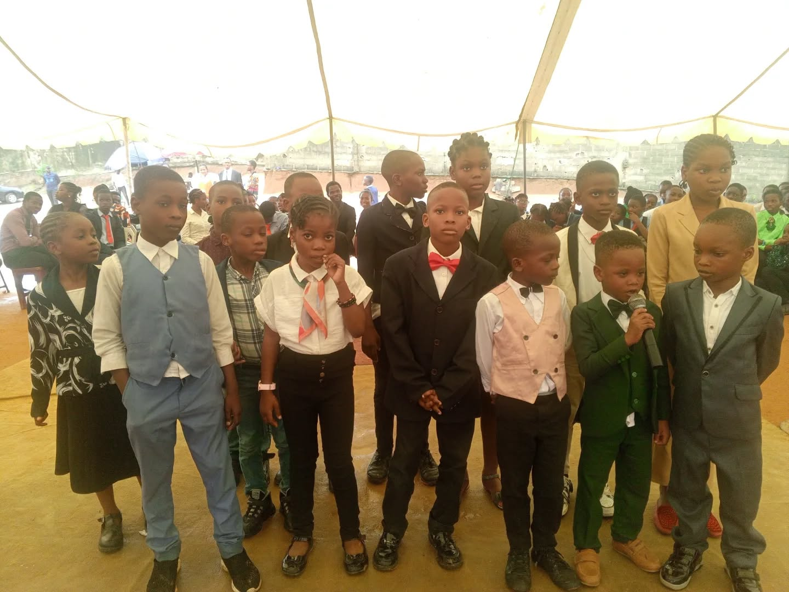

Excellence since 2005
A school where every learner can discover what is possible.
Sagab Schools is a private educational community in Solomade, Ikorodu, founded by Dr. (Mrs.) Beauty O. Obodo to develop every learner academically, morally and socially.
Through structured learning, practical education, discipline, mentoring and character development, we help children build the knowledge and confidence to fulfil their unique potential.
Read our story
A remarkable beginning
From six students to a thriving school community.
Sagab began in 2005 with six students and a clear conviction: excellent education should shape both the mind and the person.
That first small class became the beginning of Sagab Montessori School and Sagab College—a growing community united by high expectations, personal attention and enduring values.
Today, the school operates from its permanent college site at Plot 40/46, Bolajoko Oruku Street, off Odumbo Street, Solomade Estate, Ikorodu, Lagos State.
We do more than prepare students for examinations. We prepare them to learn, lead and excel.
What guides us
A clear purpose, lived every day.
Our vision, mission and values connect academic ambition with the character needed to use knowledge well.
Distinguished young people, prepared to excel.
To be a foremost educational institution that produces distinguished young people who demonstrate excellence in academics and every other area of life.
Quality education that unlocks individual potential.
To provide qualitative education at the highest standard, leading to the self-actualisation of each learner’s unique potential in a dynamic society.
Our core values
The standards that shape a Sagab student.
- Fear of God
- Hard Work
- Discipline
- Obedience
- Integrity
- Excellence

Academic confidence
Strong preparation. Successful examination outcomes.
Sagab College has built a record of successful performance in WAEC and other external examinations through purposeful teaching, consistent practice and close academic support.
The College is fully approved by the Lagos State Ministry of Education and accredited to present students for the major examinations that mark their progress through secondary school.
One continuous journey
A strong foundation. A confident future.
From the curiosity of the Montessori years to the focus of senior secondary school, learners are known, challenged and supported at every stage.

Sagab Montessori School
A caring, engaging environment where children build strong foundations, independence and a lasting love of learning.
Sagab College
Rigorous academics, practical learning and mentoring prepare students for examinations, higher education and life beyond school.
Beyond Sagab
Graduates equipped to pursue ambitious paths.
Sagab graduates have progressed to reputable higher institutions to study Medicine, Engineering, Pharmacy, Law, Accounting and other demanding disciplines.

Medicine and Pharmacy

Law

Accounting and Finance
Start your Sagab journey
Come and see where your child can learn, lead and excel.
Explore our academic programme, begin an application or speak with the school team to arrange a visit.
Begin admission Schedule a school visit